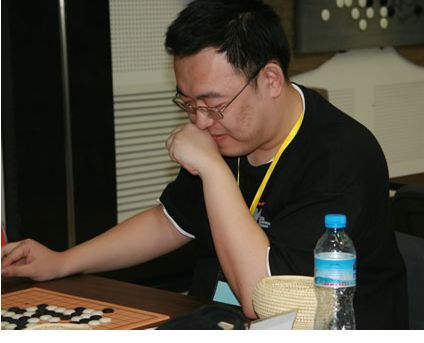

不信奉格言只信自己--吴镝
#1 不信奉格言只信自己--吴镝 作者：茗弈小刀 发表时间：2011-7-16 12:13:13
从小我就是一个无神论者，虽然喜欢读一些光怪陆离的小说，但是从不相信这些会发生在自己身上。
让我们悄悄走进中国五子棋传奇人物，曾为中国争得荣誉，创世锦赛第一的连珠教父--吴镝(无敌）的内心世界......
l][/dl]
2007年全国赛男子组第2名,2005年全国赛男子组第四名,2002年全国赛男子组第五名
2001年5月第二届中行杯第五名
2002年8月第一届全国赛A组第五名
2002年10月首届北京公开赛B组第十名
2003年9月首届吉林公开赛亚军
2003年10月第二届全国赛A组第九名
2003年10月首届亚洲杯第四名
2004年8月第二届浙江邀请赛第三名
2004年10月第三届全国赛A组第六名
2005年3月第一届互联星空现场总决赛五子棋项目冠军
2005年5月第三届上海连珠名人战亚军
2005年5月中韩对抗赛中方三台
2005年8月天津团体赛冠军队二台
2005年10月第四届全国赛A组第四
2005年11月第一届CEG电子竞技五子棋项目现场总决赛冠军
2005年12月第二届互联星空现场总决赛五子棋项目第三
2006年3月第四届上海连珠名人战第七
2006年7月河北公开赛冠军
2006年8月天津团体赛亚军队一台
2006年8月第四届浙江赛A组亚军
2006年10月第五届全国赛第21名
2006年11月第二届CEG电子竞技五子棋项目现场总决赛冠军
2009年11月第一届全国智运会五子棋男子个人赛亚军。
蓝鲸,东北人氏,因求学天津而进天津连珠俱乐部。身高几近两米，虽以黑石暗器起家，但此人天纵其才，天资极高，结合自身的修炼，竟然把小小黑石暗器练成隐隐有一代宗师的板门刀法。此后他舍弃黑石暗器，武功自成一路。此人虽身材魁梧，招高力猛，却绝不是卤莽无知之辈，两军对战他总是喜欢研究些新奇的战术。
于京平：
怎么说蓝鲸呢？很少有人象他这样愿意在棋上花费这么多时间，而他用在棋上的每一分钟都有收获。网络里修成正果的人不多，或许我永远不会成为他那样的棋手，不过这是我的目标。
bayerno：《感怀》
吴镝相关文章列表
#2 Re:连珠界教父--吴镝 作者：刀魂 发表时间：2011-7-16 12:30:23
小刀，你比较适合做 挖坟 工作。。。
#3 Re:不信奉格言只信自己--吴镝 作者：茗弈小刀 发表时间：2011-7-16 12:49:03
 郁闷，调不来字的大小。
郁闷，调不来字的大小。
#4 Re:不信奉格言只信自己--吴镝 作者：隐藏菜系 发表时间：2011-7-16 12:49:32
........［此帖子已被 隐藏菜系 在 2011-7-16 12:50:55 编辑过］
#5 Re:不信奉格言只信自己--吴镝 作者：小帮帮 发表时间：2011-7-16 13:04:51
吴镝大师很给力，背景音乐怎么下载啊？#6 Re:不信奉格言只信自己--吴镝 作者：被感动的人 发表时间：2011-7-16 19:33:48
汇总得真好哇，真是个能干的mm！
#7 Re:不信奉格言只信自己--吴镝 作者：以和为贵 发表时间：2011-7-16 20:03:21
重剑无锋，大巧不工。［ 被感动的人 于 2011-7-18 12:44:45 时花20金币送鲜花一朵］
#8 Re:Re:不信奉格言只信自己--吴镝 作者：aabb 发表时间：2011-7-18 12:27:25
引用：在音乐上点右键，选属性，最下面就可以看到地址了。粘贴到地址栏或下载工具里都可以。
原文由 小帮帮 发表于 2011-7-16 13:04:51 :
吴镝大师很给力，背景音乐怎么下载啊？
［ 被感动的人 于 2011-7-18 12:44:34 时花20金币送鲜花一朵］
#9 Re:不信奉格言只信自己--吴镝 作者：被感动的人 发表时间：2011-7-19 20:16:57
悲催了，我刚才把这个帖子的链接整理了一次，结果网络不好，都白忙了..............特别提醒大家：先在文档里整理好了再发啊~
#10 Re:不信奉格言只信自己--吴镝 作者：小小亦默 发表时间：2011-7-20 16:41:54
老了
#11 Re:不信奉格言只信自己--吴镝 作者：掌棋如烟 发表时间：2011-7-20 18:25:53
论坛里的大鱼,说了很多我没敢说 而又正中我下怀的话［ 雅匪 于 2011-7-20 19:57:18 时花20金币送鲜花一朵］